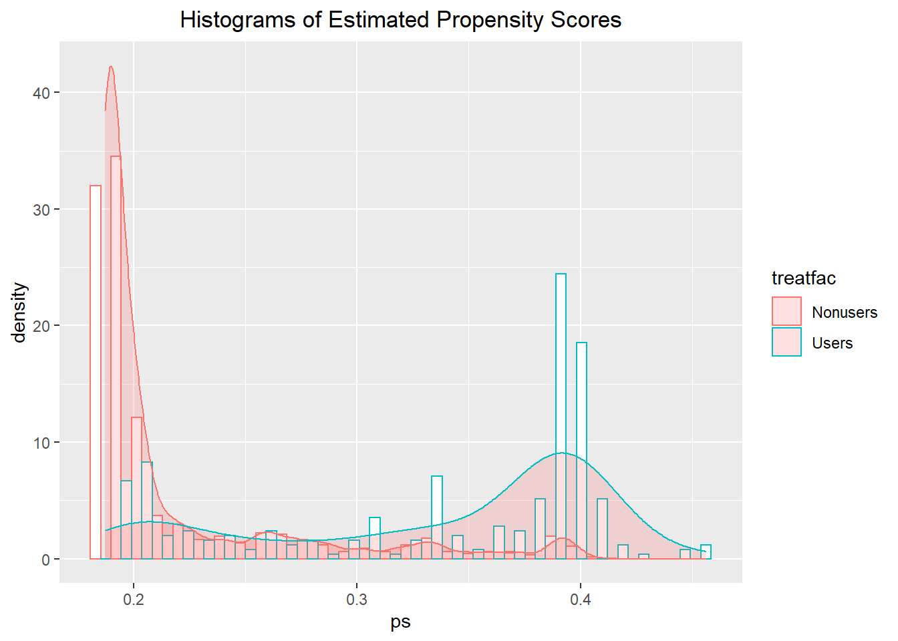

6 Section 5.8.2, 5.8.3, and 5.8.4 (SD & PS)
6.1 Section 5.8.2 Optimal Matching
library(optmatch)
library(knitr)
library(broom)
library(sandwich)
library(kableExtra)
library(tidyverse)
library(rlang)
select <- dplyr::select6.1.1 Load Data
d <- haven::read_dta("data/Data_Chapter5/chpt5_2_original.dta")
df <- haven::read_dta("data/Data_Chapter5/chpt5_2.dta")
cds <- haven::read_dta("data/Data_Chapter5/chpt5_2ps.dta")6.1.2 Bivariate Comparisons
# Intergenerational dependence
gmodels::CrossTable(d$kuse, d$puse,
prop.c = FALSE, prop.r = FALSE, prop.chisq = FALSE,
chisq = TRUE)##
##
## Cell Contents
## |-------------------------|
## | N |
## | N / Table Total |
## |-------------------------|
##
##
## Total Observations in Table: 1003
##
##
## | d$puse
## d$kuse | 0 | 1 | Row Total |
## -------------|-----------|-----------|-----------|
## 0 | 615 | 114 | 729 |
## | 0.613 | 0.114 | |
## -------------|-----------|-----------|-----------|
## 1 | 154 | 120 | 274 |
## | 0.154 | 0.120 | |
## -------------|-----------|-----------|-----------|
## Column Total | 769 | 234 | 1003 |
## -------------|-----------|-----------|-----------|
##
##
## Statistics for All Table Factors
##
##
## Pearson's Chi-squared test
## ------------------------------------------------------------
## Chi^2 = 88.27405 d.f. = 1 p = 5.698621e-21
##
## Pearson's Chi-squared test with Yates' continuity correction
## ------------------------------------------------------------
## Chi^2 = 86.70687 d.f. = 1 p = 1.258586e-20
##
## # Wilcoxon Rank-Sum (Mann-Whitney) test and t-test
d %>%
select(mratio96, pcged97, pcg_adc, black, age97, male, kuse) %>%
pivot_longer(-kuse, names_to = "variable") %>%
group_by(variable) %>%
nest() %>%
mutate(wilcoxon = map(data, ~wilcox.test(.$value ~.$kuse, correct = F))) %>%
mutate(wilcoxon.stat = map(wilcoxon, ~round(.$statistic, 3))) %>%
mutate(wilcoxon.pvalue = map(wilcoxon, ~round(.$p.value, 3))) %>%
unnest(cols = c(wilcoxon.stat, wilcoxon.pvalue)) %>%
mutate(ttest = map(data, ~t.test(.$value ~ .$kuse, var.equal = T))) %>%
mutate(t.stat = map(ttest, ~round(.$statistic, 3))) %>%
mutate(t.pvalue = map(ttest, ~round(.$p.value, 3))) %>%
unnest(cols = c(t.stat, t.pvalue)) %>%
select(-data, -wilcoxon, -ttest)## # A tibble: 6 x 5
## # Groups: variable [6]
## variable wilcoxon.stat wilcoxon.pvalue t.stat t.pvalue
## <chr> <dbl> <dbl> <dbl> <dbl>
## 1 mratio96 172618. 0 12.3 0
## 2 pcged97 147410. 0 12.3 0
## 3 pcg_adc 69728 0 -11.0 0
## 4 black 58038 0 -12.7 0
## 5 age97 87129 0.002 -3.11 0.002
## 6 male 101544 0.636 0.473 0.6376.1.3 Outcome Without Bias Control
# visual
d <- d %>%
dplyr::mutate(treatfac = case_when(kuse==0 ~ "Nonusers",
kuse==1 ~ "Users"))
ggplot(d, aes(y = lwss97, x = treatfac)) +
geom_boxplot()# t-test
t.test(lwss97 ~ kuse, data = d, var.equal = T) %>%
broom::tidy()## # A tibble: 1 x 10
## estimate estimate1 estimate2 statistic p.value parameter conf.low conf.high
## <dbl> <dbl> <dbl> <dbl> <dbl> <dbl> <dbl> <dbl>
## 1 9.82 104. 94.2 8.51 6.27e-17 1001 7.56 12.1
## # ... with 2 more variables: method <chr>, alternative <chr># regression
reg <- lm( lwss97 ~ kuse + male + black + age97 + pcged97 + mratio96 + pcg_adc,
data = d)
broom::tidy(lmtest::coeftest(reg, vcov = vcovCL, cluster = d$pcg_id))## # A tibble: 8 x 5
## term estimate std.error statistic p.value
## <chr> <dbl> <dbl> <dbl> <dbl>
## 1 (Intercept) 84.9 4.50 18.9 4.30e-68
## 2 kuse -4.73 1.39 -3.40 7.00e- 4
## 3 male -2.00 0.987 -2.02 4.34e- 2
## 4 black -1.88 1.23 -1.53 1.27e- 1
## 5 age97 0.873 0.170 5.14 3.30e- 7
## 6 pcged97 0.910 0.336 2.71 6.91e- 3
## 7 mratio96 1.13 0.332 3.41 6.67e- 4
## 8 pcg_adc -0.758 0.311 -2.44 1.50e- 26.1.4 Matching
Note: To be consistent with the STATA result, we will use the propensity scores created by Stata.
6.1.4.1 Distribution of estimated propensity scores
cds <- cds %>%
dplyr::mutate( treatfac = case_when( kuse==0 ~ "Nonusers",
kuse==1 ~ "Users"))
ggplot(cds, aes(x = treatfac, y = ps)) + geom_boxplot() +
ggtitle("Box Plots of Estimated Propensity Scores") +
theme(plot.title = element_text(hjust = 0.5))ggplot(cds, aes(x = ps, color = treatfac)) +
geom_histogram(aes(y=..density..), fill="white", position="dodge")+
geom_density(alpha=.2, fill="#FF6666") +
ggtitle("Histograms of Estimated Propensity Scores") +
theme(plot.title = element_text(hjust = 0.5))
6.1.4.2 Optimal Matching
attach(cds)
prank <- rank(ps)
names(prank) <- kid
d1 <- outer(prank[kuse==1], prank[kuse==0], "-")
d1 <- abs(d1)
#fullmatch fm
fm <- fullmatch(d1)
(fm.d <- matched.distances(fm,d1,pres=TRUE))
unlist(fm.d,max)
#variable match, (vm1 - at least 1 at most 4)
vm1 <- fullmatch(d1,min.controls=1,max.controls=4)
(vm1.d <- matched.distances(vm1,d1,pres=TRUE))
unlist(vm1.d,max)
#variable match, (vm2 - at least 2 at most 4)
vm2 <- fullmatch(d1,min.controls=2,max.controls=4)
(vm2.d <- matched.distances(vm2,d1,pres=TRUE))
unlist(vm2.d,max)
#variable match, (vm3 - use Hensen's equaion)
vm3 <- fullmatch(d1,min.controls=1.33,max.controls=5.32)
(vm3.d <- matched.distances(vm3,d1,pres=TRUE))
unlist(vm3.d,max)
#variable match, (vm4 at least 2 at most 7)
vm4 <- fullmatch(d1,min.controls=2,max.controls=7)
(vm4.d <- matched.distances(vm4,d1,pres=TRUE))
unlist(vm4.d,max)
#pairmatch pm
pm <- pairmatch(d1, controls=1)
(pm.d <- matched.distances(pm,d1,pres=TRUE))
unlist(pm.d,max)mean(unlist(fm.d))## [1] 35.89389sum(unlist(fm.d))## [1] 31120stratumStructure(fm)## 25:1 13:1 11:1 10:1 9:1 6:1 5:1 4:1 3:1 2:1 1:1 1:2 1:3
## 1 1 3 1 1 3 4 3 5 5 49 9 11
## 1:4 1:5 1:6 1:7 1:8 1:9 1:10 1:11 1:15 1:17 1:18 1:19 1:21
## 7 8 3 3 4 2 3 2 1 1 1 1 1
## 1:24 1:31 1:248
## 1 1 1mean(unlist(vm1.d))## [1] 328.7579sum(unlist(vm1.d))## [1] 239664.5stratumStructure(vm1)## 1:1 1:3 1:4
## 122 1 151mean(unlist(vm2.d))## [1] 348.1852sum(unlist(vm2.d))## [1] 253827stratumStructure(vm2)## 1:2 1:3 1:4
## 183 1 90mean(unlist(vm3.d))## [1] 269.7222sum(unlist(vm3.d))## [1] 196627.5stratumStructure(vm3)## 1:1 1:6
## 183 91mean(unlist(vm4.d))## [1] 312.3162sum(unlist(vm4.d))## [1] 227678.5stratumStructure(vm4)## 1:2 1:3 1:7
## 237 1 36mean(unlist(pm.d))## [1] 143.2263sum(unlist(pm.d))## [1] 39244stratumStructure(pm)## 1:1 0:1
## 274 4556.1.4.3 Table 5.10. Covariate Imbalance Before and After Matching by Matching Scheme
# Imbalance function
imbalance <- function(cov, method) {
# get quosure
cov_name <- cov
method_name <- method
cov <- rlang::parse_expr(cov)
method <- rlang::parse_expr(method)
# dx
df2 <- df %>%
group_by(kuse) %>%
summarise(m_x := mean(!!cov),
sd_x := sd(!!cov), .groups = "drop")
mxt = df2[2,2]
mxc = df2[1,2]
s2xt = df2[2,3]^2
s2xc = df2[1,3]^2
sx = sqrt((s2xt+s2xc)/2)
dx = as.numeric(abs(mxt-mxc)/sx)
# dxm
if (method != "before") {
df3 <- df %>%
group_by(!!method, kuse) %>%
summarise(m_x = mean(!!cov),
sd_x = sd(!!cov),
n = n(),
.groups = "drop")
mxc = as.numeric(mean(filter(df3, kuse == 0)$m_x))
mxt = as.numeric(mean(filter(df3, kuse == 1)$m_x))
dxm_num = abs(mxt-mxc)
dxm = as.numeric(dxm_num/sx)
return(tibble(cov = cov_name, method = method_name, dx = NA, dxm = dxm))
} else {
return(tibble(cov = cov_name, method = method_name, dx = dx, dxm = NA))
}
}
# Define covariates
cov_labels <- tibble(cov = c("mratio96", "pcged97", "pcg_adc",
"black", "age97", "male"),
new = c("Ratio of family income to poverty line in 1996",
"Caregiver's education in 1997 (years of schooling)",
"Caregiver's number of years using AFDC in childhood",
"Child's race: African American (reference: other)",
"Child's age in 1997", "Child's gender: male (reference: female)"),
order = c(1, 2, 3, 4, 5, 6))
# Calculate dx and dxm using imbalance()
arg1 <- rep(c("mratio96", "pcged97", "pcg_adc", "black", "age97", "male"), each = 7)
arg2 <- rep(c("before", "fm", "vm1", "vm2", "vm3", "vm4", "pm"), length(arg1)/7)
table_5.10 <- map2_dfr(arg1, arg2, imbalance) %>%
mutate(method = recode(method,
`before` = "Before Matching",
`fm` = "Full Matching",
`vm1` = "Variable Matching 1 (at least 1, at most 4)",
`vm2` = "Variable Matching 2 (at least 2, at most 4)",
`vm3` = "Variable Matching 3 (Hansen's equation)",
`vm4` = "Variable Matching 4 (at least 2, at most 7)",
`pm` = "Pair matching")) %>%
left_join(cov_labels, by = "cov") %>%
arrange(order) %>%
select(new, method, dx, dxm)
# Print Table 5.10
options(knitr.kable.NA = "")
knitr::kable(table_5.10,
col.names = c("Covariate", "Matching Scheme", "$d_x$", "$d_{xm}$"),
escape = FALSE,
format = "html",
digits = 2,
caption = "Table 5.10. Covariate Imbalance Before and After Matching by Matching Scheme") %>%
kable_styling(latex_options = "striped") %>%
kable_styling(position = "center") %>%
collapse_rows(columns = 1, valign = "top")| Covariate | Matching Scheme | \(d_x\) | \(d_{xm}\) |
|---|---|---|---|
| Ratio of family income to poverty line in 1996 | Before Matching | 1.02 | |
| Ratio of family income to poverty line in 1996 | Full Matching | 0.04 | |
| Ratio of family income to poverty line in 1996 | Variable Matching 1 (at least 1, at most 4) | 0.79 | |
| Ratio of family income to poverty line in 1996 | Variable Matching 2 (at least 2, at most 4) | 0.94 | |
| Ratio of family income to poverty line in 1996 | Variable Matching 3 (Hansen’s equation) | 0.74 | |
| Ratio of family income to poverty line in 1996 | Variable Matching 4 (at least 2, at most 7) | 0.87 | |
| Ratio of family income to poverty line in 1996 | Pair matching | 0.25 | |
| Caregiver’s education in 1997 (years of schooling) | Before Matching | 0.91 | |
| Caregiver’s education in 1997 (years of schooling) | Full Matching | 0.17 | |
| Caregiver’s education in 1997 (years of schooling) | Variable Matching 1 (at least 1, at most 4) | 0.72 | |
| Caregiver’s education in 1997 (years of schooling) | Variable Matching 2 (at least 2, at most 4) | 0.87 | |
| Caregiver’s education in 1997 (years of schooling) | Variable Matching 3 (Hansen’s equation) | 0.75 | |
| Caregiver’s education in 1997 (years of schooling) | Variable Matching 4 (at least 2, at most 7) | 0.81 | |
| Caregiver’s education in 1997 (years of schooling) | Pair matching | 0.34 | |
| Caregiver’s number of years using AFDC in childhood | Before Matching | 0.67 | |
| Caregiver’s number of years using AFDC in childhood | Full Matching | 0.01 | |
| Caregiver’s number of years using AFDC in childhood | Variable Matching 1 (at least 1, at most 4) | 0.56 | |
| Caregiver’s number of years using AFDC in childhood | Variable Matching 2 (at least 2, at most 4) | 0.65 | |
| Caregiver’s number of years using AFDC in childhood | Variable Matching 3 (Hansen’s equation) | 0.55 | |
| Caregiver’s number of years using AFDC in childhood | Variable Matching 4 (at least 2, at most 7) | 0.63 | |
| Caregiver’s number of years using AFDC in childhood | Pair matching | 0.40 | |
| Child’s race: African American (reference: other) | Before Matching | 0.93 | |
| Child’s race: African American (reference: other) | Full Matching | 0.01 | |
| Child’s race: African American (reference: other) | Variable Matching 1 (at least 1, at most 4) | 0.79 | |
| Child’s race: African American (reference: other) | Variable Matching 2 (at least 2, at most 4) | 0.92 | |
| Child’s race: African American (reference: other) | Variable Matching 3 (Hansen’s equation) | 0.73 | |
| Child’s race: African American (reference: other) | Variable Matching 4 (at least 2, at most 7) | 0.85 | |
| Child’s race: African American (reference: other) | Pair matching | 0.44 | |
| Child’s age in 1997 | Before Matching | 0.22 | |
| Child’s age in 1997 | Full Matching | 0.07 | |
| Child’s age in 1997 | Variable Matching 1 (at least 1, at most 4) | 0.21 | |
| Child’s age in 1997 | Variable Matching 2 (at least 2, at most 4) | 0.22 | |
| Child’s age in 1997 | Variable Matching 3 (Hansen’s equation) | 0.19 | |
| Child’s age in 1997 | Variable Matching 4 (at least 2, at most 7) | 0.24 | |
| Child’s age in 1997 | Pair matching | 0.14 | |
| Child’s gender: male (reference: female) | Before Matching | 0.03 | |
| Child’s gender: male (reference: female) | Full Matching | 0.05 | |
| Child’s gender: male (reference: female) | Variable Matching 1 (at least 1, at most 4) | 0.02 | |
| Child’s gender: male (reference: female) | Variable Matching 2 (at least 2, at most 4) | 0.05 | |
| Child’s gender: male (reference: female) | Variable Matching 3 (Hansen’s equation) | 0.01 | |
| Child’s gender: male (reference: female) | Variable Matching 4 (at least 2, at most 7) | 0.03 | |
| Child’s gender: male (reference: female) | Pair matching | 0.09 |
6.2 Section 5.8.3 Post-Full-Matching Analysis of Outcome
6.2.1 Hodges-Lehmann Aligned Rank Test
# Shenyang Guo's Stata program, hodgesl, version 8.2
hodgesl <- function(dataname, varname, blockname, treatname) {
blockname_str <- deparse(substitute(blockname))
set.seed(1000)
renamed_file <- dataname %>%
filter(!is.na({{blockname}}))
r1 <- renamed_file %>%
group_by({{blockname}}) %>%
summarise(m_y = mean({{varname}}), .groups = "drop") %>%
arrange({{blockname}})
r2 <- renamed_file %>%
group_by({{blockname}}, {{treatname}}) %>%
summarise(mean_y = mean({{varname}}),
n = n(), .groups = "drop") %>%
mutate(mean_diff = ifelse({{treatname}} == 1,
((n+lag(n))/sum(n))*(mean_y-lag(mean_y)), NA)) %>%
mutate(tx_effect = sum(mean_diff, na.rm = T)) %>%
mutate(i = row_number()) %>%
slice(1) %>%
select(tx_effect, i)
fm_results <- renamed_file %>%
group_by({{blockname}}, {{treatname}}) %>%
summarise(mean_y = mean({{varname}}),
n = n(), .groups = "drop")
r3 <- renamed_file %>%
group_by({{blockname}}, {{treatname}}) %>%
summarise(m_or_n = n(), .groups = "drop") %>%
arrange({{blockname}}, {{treatname}}) %>%
mutate(mi = ifelse({{treatname}} == 0, m_or_n,
ifelse({{treatname}} == 1, NA, NA))) %>%
mutate(ni = ifelse({{treatname}} == 1, m_or_n,
ifelse({{treatname}} == 0, NA, NA))) %>%
mutate(Ni = ni+lag(mi)) %>%
mutate(mi = ifelse(is.na(mi), lag(mi), mi)) %>%
filter(!is.na(Ni)) %>%
mutate(factor = (mi*ni)/(Ni*(Ni-1))) %>%
select({{blockname}}, factor) %>%
arrange({{blockname}})
r4 <- renamed_file %>%
arrange({{blockname}}) %>%
left_join(r1, by = blockname_str) %>%
mutate(dy = {{varname}}-m_y) %>%
arrange(dy) %>%
mutate(rk = row_number()) %>%
arrange({{blockname}})
r4a <- r4 %>%
filter({{treatname}} != 0) %>%
group_by({{blockname}}) %>%
summarise(wsi = sum(rk), .groups = "drop")
r5 <- r4 %>%
group_by({{blockname}}) %>%
summarise(ki_ = mean(rk), .groups = "drop")
r6 <- r4 %>%
filter({{treatname}} != 0) %>%
group_by({{blockname}}) %>%
summarise(ni = n(), .groups = "drop") %>%
arrange({{blockname}}) %>%
left_join(r5, by = blockname_str) %>%
mutate(E_wsi = ni*ki_) %>%
arrange({{blockname}})
r7 <- r4 %>%
arrange({{blockname}}) %>%
left_join(r5, by = blockname_str) %>%
mutate(k = (rk-ki_)^2) %>%
group_by({{blockname}}) %>%
summarise(ss_kd_i = sum(k), .groups = "drop") %>%
arrange({{blockname}})
results <- r3 %>%
arrange({{blockname}}) %>%
left_join(r7, by = blockname_str) %>%
left_join(r6, by = blockname_str) %>%
left_join(r4a, by = blockname_str) %>%
mutate(var_wsi = factor*ss_kd_i,
var = sum(var_wsi),
sum_Ewsi = sum(E_wsi),
ws = sum(wsi),
HL_mean = ws-sum_Ewsi,
HL_se = sqrt(var),
z = HL_mean/HL_se,
p = 1 - pnorm(abs(z))) %>%
select(HL_mean, HL_se, z, p) %>%
slice(1) %>%
mutate(i = row_number()) %>%
left_join(r2, by = "i")
return(results)
}
df.h <- haven::read_dta("data/Data_Chapter5/chpt5_2(original).dta") %>%
mutate(fm_s = paste0(round(fm, 5), "s"))
hodgesl(df.h, lwss97, fm_s, kuse)## # A tibble: 1 x 6
## HL_mean HL_se z p i tx_effect
## <dbl> <dbl> <dbl> <dbl> <int> <dbl>
## 1 -36028. 4559. -7.90 1.33e-15 1 -10.26.2.2 Cohen’s d
# Shenyang Guo's Stata program, imbalance, version 8.2
imbalance2 <- function(df, varname, treatname, blockname) {
# dx
df2 <- df %>%
group_by({{treatname}}) %>%
summarise(m_x = mean({{varname}}), sd_x = sd({{varname}}), .groups = "drop")
mxt = df2[2,2]
mxc = df2[1,2]
s2xt = df2[2,3]^2
s2xc = df2[1,3]^2
sx = sqrt((s2xt+s2xc)/2)
dx = as.numeric(abs(mxt-mxc)/sx)
# dx
df3 <- df %>%
group_by({{blockname}}, {{treatname}}) %>%
summarise(m_x = mean({{varname}}),
sd_x = sd({{varname}}),
n = n(),
.groups = "drop")
mxc = as.numeric(mean(filter(df3, {{treatname}} == 0)$m_x))
mxt = as.numeric(mean(filter(df3, {{treatname}} == 1)$m_x))
dxm_num = abs(mxt-mxc)
dxm = as.numeric(dxm_num/sx)
return(list(dx = dx, dxm = dxm))
}
df.h2 <- haven::read_dta("data/Data_Chapter5/chpt5_2(original).dta")
imbalance2(df.h2, lwss97, kuse, fm)$dxm # dxm for the outcome variable is Cohen's d## [1] 0.65231816.3 Section 5.8.4 Post-Matching Analysis Using Regression of Difference Scores
df <- haven::read_dta("data/Data_Chapter5/chpt5_2.dta")
# kuse == 1
df1 <- df %>%
select(pm, kuse, y1 = lwss97, male1 = male, black1 = black, age971 = age97,
pcged971 = pcged97, mratio961 = mratio96, pcg_id) %>%
filter(kuse==1)
# kuse == 0
df0 <- df %>%
select(pm, kuse, y0 = lwss97, male0 = male, black0 = black, age970 = age97, pcged970 = pcged97, mratio960 = mratio96, pcg_id) %>%
filter( kuse == 0 )
# merge data
df2 <- left_join(df0, df1, "pm")
df2 <- df2 %>%
mutate(y = y1 - y0,
male = male1 - male0,
black = black1 - black0,
age97 = age971 - age970,
pcged97 = pcged971 - pcged970,
mratio96 = mratio961 - mratio960)
# regression
reg1 <- lm(y ~ male + black + age97 + pcged97 + mratio96, data = df2)
broom::tidy(lmtest::coeftest(reg1, vcov = vcovCL, cluster = df2$pcg_id.x))## # A tibble: 6 x 5
## term estimate std.error statistic p.value
## <chr> <dbl> <dbl> <dbl> <dbl>
## 1 (Intercept) -3.17 1.73 -1.83 0.0682
## 2 male -1.21 1.84 -0.657 0.512
## 3 black -3.34 2.33 -1.43 0.153
## 4 age97 0.229 0.329 0.695 0.487
## 5 pcged97 0.0111 0.508 0.0219 0.983
## 6 mratio96 3.15 1.67 1.89 0.0602